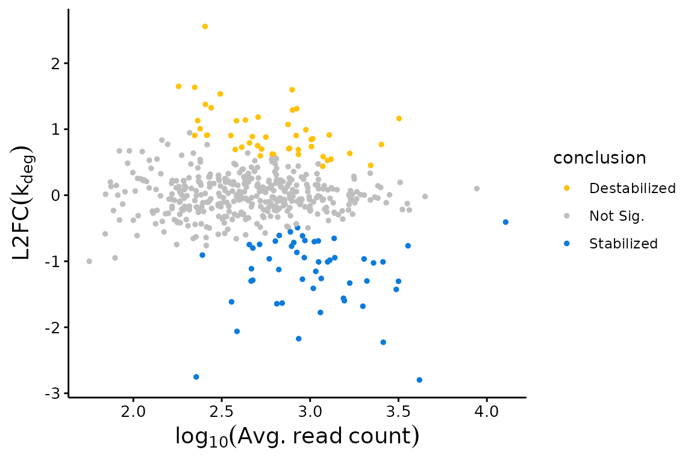
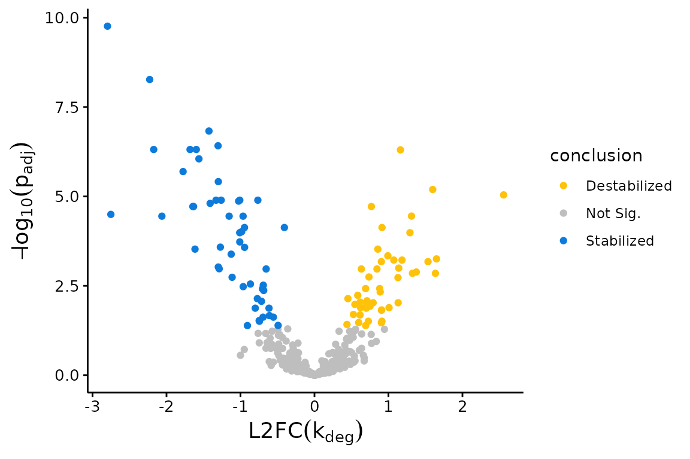
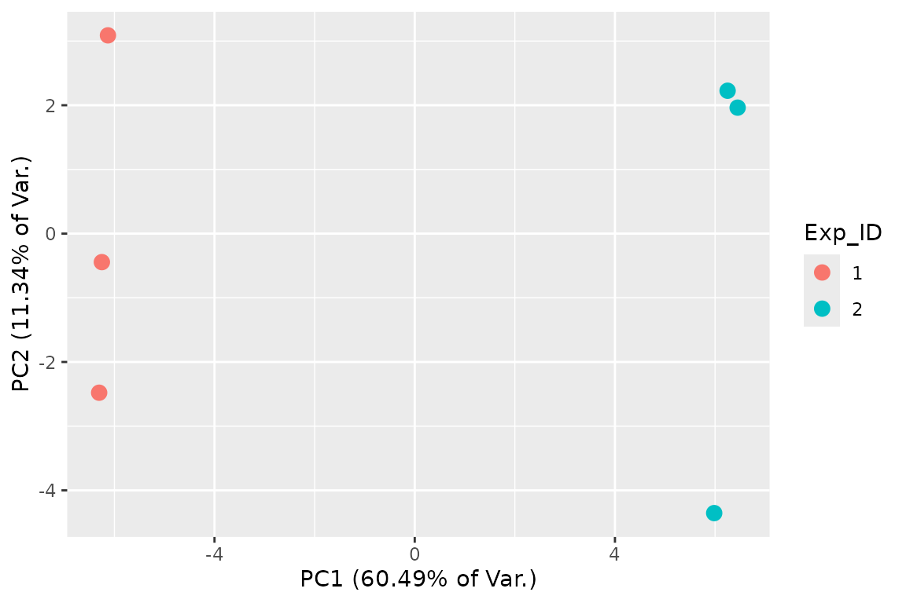

Abstract
bakR is a tool for comparing nucleotide recoding RNA-seq datasets (NR-seq). NR-seq refers to a class of methods (e.g., TimeLapse-seq, SLAM-seq, TUC-seq, etc.) which combine RNA-seq, metabolic labeling, and unique metabolic label recoding chemistries to assess the kinetics of gene expression. This vignette will provide a quick introduction to using bakR. A longer version of this vignette (“Differential kinetic analysis with bakR”) exists to provide a more in-depth discussion of each step of this process.
Necessary Setup
Install and load bakR to run the code in this vignette; instructions on how to do so can be found at this link. Also, you’ll want to set the seed so as to ensure the results you get reproduce those presented in the vignette.
Step 1: Creating a bakRData Object
The 1st step to using bakR is to create a bakRData object. A bakRData
object consists of two components: a cB data frame and a metadf data
frame. cB stands for counts binomial and contains all of the information
about mutations seen in sequencing reads in each sample sequenced.
metadf stands for metadata data frame and contains important information
about the experimental details of each sample (i.e., how long the
metabolic label feed was, which samples are reference samples, and which
are experimental samples). Examples of what these data structures are
available via calls to data("cB_small") and
data("metadf"), for the cB and metadf respectively.
A cB data frame consists of rows corresponding to groups of reads with identical data, where data corresponds to the values of the following four variables:
- sample: This is the name of the sample from which the reads described in this row originated. Usually this will be some sort of character vector that you have defined.
- TC: Number of U-to-C mutations (assuming using s4U as the metabolic label). Called TC because technically the data is T-to-C mutations in reverse-transcribed RNA.
- nT: Number of Ts (Us in the RNA) in the sequencing read(s)
-
XF: Name of the feature (gene, exon, etc.) that the
read comes from. Kinetic parameters will be estimated for each feature,
so this should represent the functional unit who’s metabolic kinetics
you are interested in.
- XF stands for “exonic feature”, since in most cases you should only be considering reads that map to definitively exonic locations. Introns are typically rapidly turned over and thus will be highly labeled species that will bias estimates of mature transcript stability.
The last column of a cB data frame is n: Number of reads with identical data for the other 4 columns.
cB data frames are most easily obtained from the Snakemake implementation of a pipeline developed by our lab, called bam2bakR (available here).
The metadf has two columns:
- tl: The length of the metabolic labeling feed. This can be in any units (the simulated data puts it in terms of minutes), but if no s4U was fed to a sample, tl must be 0 for that sample. -s4U controls play an important role in all of the statistical models, so this is crucial to remember. While not technically necessary to run bakR, we always highly suggest including these controls.
- Exp_ID: Stands for “Experimental ID” and is a numerical ID that denotes which samples are from the reference condition (Exp_ID = 1) and which experimental samples belong to the same “treatment” (Exp_IDs > 1). You can have more than one experimental sample, but all comparisons will only be done with respect to one reference sample.
The metadf data frame must also have row names corresponding to the sample name that the tl and Exp_ID entries describe, as the sample name appears in the cB data frame.
Once you have these two data frames correctly constructed, you can create a bakRData object:
Step 2: Fitting the Efficient Model
bakR contains three different implementations of a statistical model of NR-seq data. You must always first run the most efficient implementation. The other two implementations can then be run using the output of this implementation. Below I will show how to run the efficient implementation using simulated data:
# Simulate a nucleotide recoding dataset
sim_data <- Simulate_bakRData(500)
# This will simulate 500 features, 2 experimental conditions
# and 3 replicates for each experimental condition
# See ?Simulate_bakRData for details regarding tunable parameters
# Extract simulated bakRData object
bakRData <- sim_data$bakRData
# Extract simualted ground truths
sim_truth <- sim_data$sim_list
# Run the efficient model
Fit <- bakRFit(bakRData)
#> Finding reliable Features
#> Filtering out unwanted or unreliable features
#> Processing data...
#> Estimating pnew with likelihood maximization
#> Estimating unlabeled mutation rate with -s4U data
#> Estimated pnews and polds for each sample are:
#> # A tibble: 6 × 4
#> # Groups: mut [2]
#> mut reps pnew pold
#> <int> <dbl> <dbl> <dbl>
#> 1 1 1 0.0502 0.00100
#> 2 1 2 0.0500 0.00100
#> 3 1 3 0.0501 0.00100
#> 4 2 1 0.0501 0.00100
#> 5 2 2 0.0500 0.00100
#> 6 2 3 0.0503 0.00100
#> Estimating fraction labeled
#> Estimating per replicate uncertainties
#> Estimating read count-variance relationship
#> Averaging replicate data and regularizing estimates
#> Assessing statistical significance
#> All done! Run QC_checks() on your bakRFit object to assess the
#> quality of your data and get recommendations for next steps.bakRFit() is used here as a wrapper for two functions in bakR:
cBprocess() and fast_analysis(). For more details on what these
functions do, run ?cBprocess or fast_analysis.
Alternatively, see the more highly detailed version of this vignette for
additional details.
While the fast implementation was running, it outputted a message regarding the estimated pnews and pold. The pnews are the estimated mutation rates of reads from new RNAs (new meaning RNAs synthesized after the start of s4U labeling) in each sample (muts = Exp_ID, and reps = a numerical replicate ID that corresponds to the order replicates appear in the cB), and polds are the estimates for the background mutation rate used in all analyses. For more details on how bakR estimates these mutation rates and alternative estimation strategies implemented in bakR, see the longer form version of this vignette as well as the vignette on troubleshooting analyses.
To run the heavier, more highly powered models, just rerun bakRFit() on the Fit object, but with either the StanFit or HybridFit parameters set to true.
# Run Hybrid model (This might take several minutes to run)
Fit <- bakRFit(Fit, HybridFit = TRUE)
# Run Full model (This might take ~10-30 minutes to run)
Fit <- bakRFit(Fit, StanFit = TRUE)The Fit objects contain lists pertaining to the fits of each of the models. The possible contents include:
- Fast_Fit: Result of the initial fitting of the bakRData object. To learn more about its contents, see ?fast_analysis()
- Data_lists: Processed data that can be passed to the statistical models
- Hybrid_Fit: Result of running bakRFit() on the Fit object with HybridFit = TRUE. To learn more about its contents, see ?TL_stan().
- Stan_Fit: Result of running bakRFit() on the Fit object with StanFit = TRUE. Its general contents are identical to the Hybrid_Fit, even though the models are different.
Step 3: Visualizing the Results
bakR provides a variety of easy to use functions for beginning to investigate your data. The visualizations are particularly aimed at revealing trends in RNA stabilization or destabilization. These include MA plots:
## MA Plot with Fast Fit
bakR::plotMA(Fit, Model = "MLE")
Volcano plots:
## Volcano Plot with Fast Fit; significance assessed relative to an FDR control of 0.05
plotVolcano(Fit$Fast_Fit)
and PCA plots:
## 2D PCA plot with replicate fraction news
# The equivalent function prior to version 1.0.0 is FnPCA, now deprecated in
# favor of FnPCA2.
FnPCA2(Fit, Model = "MLE")
Step 4: Where to go from here
This vignette provides the minimal amount of information to get up and running with bakR. If you would like a more thorough discussion of each step of this process, check out the long form version of this vignette (“Differential kinetic analysis with bakR”). In addition, there are a number of other vignettes that cover various topics not discussed in these intro vignettes:
- Differential synthesis rate analysis
- Correcting for loss of s4U RNA during library prepartion (a.k.a. dropout correction)
- Troubleshooting analyses of NR-seq datasets
- Mechanistic dissection of differential expression
- Running bakR with fraction new estimate input (e.g., from GRAND-SLAM)
Note, all but the “Differential synthesis rate analysis” vignette are only fully compatible with version 1.0.0 of bakR. Update bakR as necessary